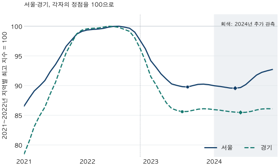

가격의 긴 흐름 · 하락의 시작과 깊이
2022년 아파트 하락, 서울·경기 언제부터 얼마나 내렸을까?
KB 월간 아파트 지수로 2022년 서울·경기의 첫 하락월, 연간 변화와 정점 대비 낙폭을 비교합니다. 관측을 2024년까지 늘리면 저점월의 순서가 바뀌는 이유와 해석의 한계를 확인하세요.
분석 기간 · 2021~2024년 KB 월간 지수 | 보유 자료 스냅샷 생성 · 2026-10-03
“2022년에 어디가 먼저, 얼마나 떨어졌을까?”라는 질문에는 날짜 하나와 하락률 하나로 답하기 어렵습니다. KB 월간 아파트 매매가격지수에서 2022년 첫 하락월은 경기 6월, 서울 8월입니다. 하지만 한 해의 하락률과 정점에서 저점까지의 낙폭은 비교하는 달이 서로 다릅니다.
어떤 지수를 어느 기간에서 비교했나요?
서울·경기의 KB 공표 월간 아파트 매매가격지수를 사용했습니다. 부동산중개업소가 표본주택의 가격을 조사하는 통계로, 매달 거래된 집의 실거래 평균이나 개별 단지 가격과 다릅니다. 전용 84㎡만의 지수도 아닙니다. 지수의 성격은 가격 종류별 확인 기준에서 먼저 구분할 수 있습니다.
주 비교기간은 2021년 1월~2023년 12월입니다. 먼저 각 지역의 2021년 1월~2022년 12월 최고 지수를 정점으로 선택하고, 그 정점부터 2023년 12월까지의 최저 지수를 저점으로 찾았습니다. 같은 값이 여러 번이면 가장 이른 달을 고릅니다. 2024년 12월까지 늘린 결과도 함께 보여 끝월 선택의 영향을 확인합니다.
이 규칙의 정점은 서울 2022년 7월, 경기 2022년 5월입니다. 흔히 쓰는 ‘2021년 고점’이라는 표현을 모든 지역·지수에 그대로 적용하면 출발점부터 어긋날 수 있습니다. 이 글은 두 지역의 정점을 같은 달로 강제하지 않습니다.

경기가 서울보다 먼저 하락했나요?
2022년 안에서 전월비가 처음 음수인 달을 찾으면 경기가 2개월 먼저입니다. 두 달 연속 하락을 확인하는 두 번째 달을 기준으로 해도 경기 7월, 서울 9월로 두 달 차이입니다. 이는 보유한 월간 공표 계열의 순서이며, 당시 그 달에 매수·매도 판단을 할 수 있었다는 뜻은 아닙니다.
| 지역 | 첫 음수 전월비 | 2개월 연속 확인월 | 선택한 정점 | 2022년 연간 변화 |
|---|---|---|---|---|
| 서울 | 2022-08 | 2022-09 | 2022-07 | -2.96% |
| 경기 | 2022-06 | 2022-07 | 2022-05 | -5.26% |
경기 6월 전월비는 −0.05%로 표시되는 작은 하락입니다. ‘하락’을 0 미만이 아닌 특정 폭 이상의 변화로 정의하면 시작월도 달라질 수 있습니다. 연속 구간과 중립 기준은 상승·하락 구간을 세는 글에서 비교했습니다. 첫 음수만 확인하고 하락의 크기나 지속기간까지 결론 내리지 않습니다.
2022년 12개월 전월비 펼치기
| 월 | 서울 | 경기 |
|---|---|---|
| 2022-01 | +0.23% | +0.23% |
| 2022-02 | +0.09% | +0.08% |
| 2022-03 | +0.05% | +0.04% |
| 2022-04 | +0.11% | +0.15% |
| 2022-05 | +0.21% | +0.17% |
| 2022-06 | +0.13% | -0.05% |
| 2022-07 | +0.03% | -0.15% |
| 2022-08 | -0.15% | -0.33% |
| 2022-09 | -0.19% | -0.35% |
| 2022-10 | -0.67% | -1.11% |
| 2022-11 | -1.42% | -1.83% |
| 2022-12 | -1.43% | -2.19% |
2022년 하락률과 정점 대비 낙폭은 왜 다른가요?
2022년 연간 변화율은 2021년 12월에서 2022년 12월까지를 비교합니다. 서울 −2.96%, 경기 −5.26%입니다. 한편 정점 대비 낙폭은 지역마다 다른 정점에서 이후 선택한 저점까지를 비교합니다. 2023년에도 이어진 하락을 포함하므로 두 숫자가 같을 이유가 없습니다.
서울의 경우 정점 지수 96.1105에서 2023년 8월 86.2743으로 내려갔습니다. 원래 지수의 기준은 2026년 1월=100이며, 그림에서는 정점=100으로 환산했습니다. 낙폭은 100×(저점 지수÷정점 지수−1)입니다. 표시용으로 반올림하기 전 지수로 계산하면 −10.23%입니다. 월별 변화율을 단순히 더한 값은 아닙니다.
| 지역 · 관측 끝 | 정점 이후 저점월 | 정점 → 저점 | 정점 → 끝월 |
|---|---|---|---|
| 서울 · 2023-12까지 | 2023-08 | -10.23% | -9.85% |
| 경기 · 2023-12까지 | 2023-07 | -14.40% | -13.94% |
| 서울 · 2024-12까지 | 2024-05 | -10.44% | -7.29% |
| 경기 · 2024-12까지 | 2024-06 | -14.53% | -13.91% |
2023년 말까지의 저점은 경기 7월, 서울 8월입니다. 이 비교에서는 경기가 먼저 하락했고 정점 대비 낙폭도 더 큽니다. 그러나 두 지역의 한 사례만으로 ‘먼저 떨어진 지역은 항상 더 크게 떨어진다’는 관계나 원인을 검증한 것은 아닙니다.
관측을 1년 늘리면 바닥의 순서가 왜 뒤집히나요?
2024년 말까지 포함하면 더 낮은 값이 관측됩니다. 서울의 저점은 2024년 5월, 경기의 저점은 2024년 6월로 바뀝니다. 이제 서울이 한 달 먼저입니다. 지수와 정점 선택 규칙을 그대로 두었는데도, 비교를 끝내는 달이 달라져 저점의 순서가 바뀐 것입니다.
낙폭은 서울 −10.23%에서 −10.44%, 경기 −14.40%에서 −14.53%로 조금 커집니다. 깊이의 변화는 작아도 저점 날짜는 크게 이동할 수 있습니다. 2023년의 반등 뒤 다시 낮아진 값을 같은 관측 창에 넣었기 때문입니다. 이 넓은 창 전체를 중단 없는 하나의 하락장이라고 부르지는 않습니다.
2024년 12월 지수는 선택한 정점 대비 서울 −7.29%, 경기 −13.91%입니다. 저점에서 올랐다는 사실과 과거 정점에 도달했다는 사실은 다릅니다. 이 글의 비교는 2024년에서 끝나므로 현재 회복 여부를 나타내지 않습니다. 이후의 더 낮은 값이 없는지도 이 표로 판단할 수 없습니다.
2021~2024년 월별 지수와 정점100 환산값 펼치기
| 월 | 서울 원지수 | 서울 정점100 | 경기 원지수 | 경기 정점100 |
|---|---|---|---|---|
| 2021-01 | 83.1691 | 86.53 | 89.6387 | 78.43 |
| 2021-02 | 84.4994 | 87.92 | 92.2562 | 80.72 |
| 2021-03 | 85.6247 | 89.09 | 94.9835 | 83.10 |
| 2021-04 | 86.4398 | 89.94 | 97.0611 | 84.92 |
| 2021-05 | 87.3107 | 90.84 | 98.7094 | 86.36 |
| 2021-06 | 88.7597 | 92.35 | 101.2763 | 88.61 |
| 2021-07 | 89.8978 | 93.54 | 103.4622 | 90.52 |
| 2021-08 | 91.3302 | 95.03 | 106.3793 | 93.07 |
| 2021-09 | 92.8764 | 96.63 | 109.2160 | 95.56 |
| 2021-10 | 93.8482 | 97.65 | 111.0458 | 97.16 |
| 2021-11 | 94.8420 | 98.68 | 112.8515 | 98.74 |
| 2021-12 | 95.2791 | 99.13 | 113.5488 | 99.35 |
| 2022-01 | 95.5011 | 99.37 | 113.8064 | 99.57 |
| 2022-02 | 95.5890 | 99.46 | 113.8970 | 99.65 |
| 2022-03 | 95.6412 | 99.51 | 113.9377 | 99.69 |
| 2022-04 | 95.7459 | 99.62 | 114.1036 | 99.83 |
| 2022-05 | 95.9490 | 99.83 | 114.2944 | 100.00 |
| 2022-06 | 96.0772 | 99.97 | 114.2423 | 99.95 |
| 2022-07 | 96.1105 | 100.00 | 114.0694 | 99.80 |
| 2022-08 | 95.9708 | 99.85 | 113.6960 | 99.48 |
| 2022-09 | 95.7849 | 99.66 | 113.2938 | 99.12 |
| 2022-10 | 95.1448 | 99.00 | 112.0406 | 98.03 |
| 2022-11 | 93.7978 | 97.59 | 109.9903 | 96.23 |
| 2022-12 | 92.4542 | 96.20 | 107.5777 | 94.12 |
| 2023-01 | 90.5198 | 94.18 | 104.5919 | 91.51 |
| 2023-02 | 89.4363 | 93.06 | 102.9742 | 90.10 |
| 2023-03 | 88.3891 | 91.97 | 101.2244 | 88.56 |
| 2023-04 | 87.5322 | 91.07 | 99.5249 | 87.08 |
| 2023-05 | 86.7667 | 90.28 | 98.4614 | 86.15 |
| 2023-06 | 86.5196 | 90.02 | 98.0724 | 85.81 |
| 2023-07 | 86.3231 | 89.82 | 97.8389 | 85.60 |
| 2023-08 | 86.2743 | 89.77 | 97.8899 | 85.65 |
| 2023-09 | 86.5029 | 90.00 | 98.1091 | 85.84 |
| 2023-10 | 86.7026 | 90.21 | 98.3182 | 86.02 |
| 2023-11 | 86.7355 | 90.25 | 98.4059 | 86.10 |
| 2023-12 | 86.6438 | 90.15 | 98.3570 | 86.06 |
| 2024-01 | 86.4773 | 89.98 | 98.2292 | 85.94 |
| 2024-02 | 86.3731 | 89.87 | 98.1360 | 85.86 |
| 2024-03 | 86.2448 | 89.74 | 97.9869 | 85.73 |
| 2024-04 | 86.1019 | 89.59 | 97.8445 | 85.61 |
| 2024-05 | 86.0750 | 89.56 | 97.7508 | 85.53 |
| 2024-06 | 86.1817 | 89.67 | 97.6868 | 85.47 |
| 2024-07 | 86.6637 | 90.17 | 97.7199 | 85.50 |
| 2024-08 | 87.4364 | 90.97 | 97.8992 | 85.66 |
| 2024-09 | 88.1995 | 91.77 | 98.1721 | 85.89 |
| 2024-10 | 88.6403 | 92.23 | 98.3521 | 86.05 |
| 2024-11 | 88.8932 | 92.49 | 98.4115 | 86.10 |
| 2024-12 | 89.1069 | 92.71 | 98.3907 | 86.09 |
이 비교에 대한 가장 중요한 반론은 무엇인가요?
사후에 보유한 조사 지수와 선택한 관측 창의 결과라는 점입니다. 저점월은 뒤의 값을 본 다음 정해집니다. 관측월은 발표일이나 매매 가능한 시점이 아니며, 당시 처음 발표된 자료를 월별로 복원한 분석도 아닙니다. 이 날짜를 그대로 사용한 매매 전략의 성과를 주장할 수 없습니다.
KB 월간 화면은 2022년 11월 개편 전후 일부 지표의 변동 가능성을 알리고 있습니다. 공식 조사개요의 2026년 표본·행정구역 개편도 함께 고려해야 합니다. 이번 계산은 공표 계열을 그대로 사용하며 개편 영향을 제거하지 않았습니다. 같은 양수를 곱해 기준100만 바꾸면 변화율은 같지만, 표본·가중치·과거 값의 개정은 별개의 문제입니다.
주간 지수, 다른 기관의 실거래 기반 지수, 특정 구·면적·단지에서는 날짜와 낙폭이 달라질 수 있습니다. 경기 계열은 KB가 공표한 광역 계열이며, 앞선 실거래 글에서 사용한 수집 경기 36지역을 임의 평균한 값이 아닙니다. 금리나 정책이 하락을 만들었다는 인과효과, 지역 간 전파, 실제 소유자의 손익도 이 비교로 계산하지 않았습니다. 명목지수이므로 물가·세금·이자·거래비용을 뺀 수익률이 아닙니다.
하락기 비교표를 볼 때 무엇을 적어 두면 될까요?
- 지수와 빈티지를 확인합니다. 월간 조사 지수인지 실거래 통계인지, 어떤 지역·주택을 다루고 언제 수집한 자료인지 적습니다.
- 시작과 끝을 나눕니다. 첫 음수월, 연간 변화, 정점 대비 낙폭의 출발·종료 달을 각각 씁니다.
- 저점 옆에 관측 끝월을 적습니다. 기간을 늘려도 같은 저점인지 확인하고, 마지막 달이 최솟값이면 이후 경로를 아직 모른다고 표시합니다.
- 시장 배경에서 내 후보로 돌아갑니다. 광역지수의 순서를 단지의 매수 타이밍으로 옮기지 말고, 같은 면적·계약 시점의 실제 거래와 자금 조건을 비교합니다.
자료·계산 규칙·검증 범위 펼치기
- 자료: KB 공표 월간 아파트 매매가격지수의 서울·경기 두 계열입니다. 앞선 글에서 대조한2010.1~2026.6의396개 지수값을 다시 확인하고, 본문 그림·월별 표에는2021.1~2024.12의96개 값을 사용했습니다.
- 시점: 원천 수집2026-10-03 07:34:22 UTC(한국시간16:34:22), 원천 갱신 표기20260914. 공식 방법 확인일2026-10-10. 원지수 기준은2026.1=100이고 그림은 지역별 선택 정점을100으로 환산했습니다. 과거 실시간 공표본을 복원한 것은 아닙니다.
- 사전 규칙: 수치 비교 전에 정점 탐색2021.1~2022.12, 저점 탐색 끝2023.12와2024.12를 정했습니다. 정점 이후의 최솟값을 찾고 동률은 가장 이른 달을 선택합니다. 두 창 모두 저점은 끝월보다 앞에 있지만 이후 더 낮은 값이 없다는 보장은 아닙니다. 전체 역사에서의 최대 낙폭이나 공식 경기 국면이 아닙니다.
- 날짜·비율: 첫 하락은2022년 중 전월비<0인 첫 달, 연속 확인월은2022년 안에서 두 번 연속 음수인 두 번째 달입니다. 0은 하락으로 세지 않으며 중립월을 건너뛰지 않습니다. 전월비=100×(이번 달÷직전 달−1), 연간 변화=100×(2022.12÷2021.12−1), 정점 대비 변화=100×(비교월÷정점−1)입니다. 원 정밀도로 계산 후 표시는 소수 둘째 자리, 원지수 표는 넷째 자리로 반올림했습니다.
- 검증·공개: 원천 체크섬·행수·유형·마트 준비도 및396값을 다시 대조했습니다. Python 계산과 원천 직접SQL의 두 지역 정점·네 관측 창·24개 전월비·첫 하락월·연속 확인월·연간 변화가 일치했습니다. 공유 월별 원지수 JSON과 이번 비교의 규칙·집계 JSON을 제공합니다. 새 원천 복제나 개별 거래·자체모형 기록 공개는 없습니다.
자료: KB부동산. 계산·분석·집필: 파파펭귄 (Nobot Kang). 에이전트로 원천 대조·계산·초안 검토를 보조했습니다. KB 공식 공표값에 이 글의 비교기간 규칙을 적용했으며, KB가 판정한 경기 정점·저점 날짜가 아닙니다.